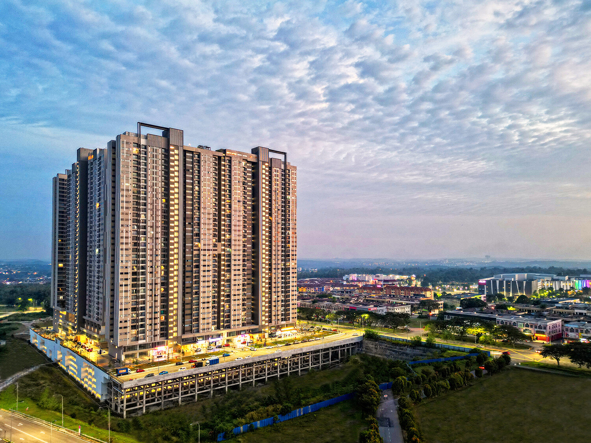

University guide for Bangladeshi applicants
Choose the INTI institution and programme together. Nilai is home to INTI International University; Subang and Penang are separate INTI colleges. Similar course names do not establish the same award, intake or fee.
INTI International University & Colleges includes separately named institutions. Nilai is home to INTI International University, while Subang and Penang are INTI International Colleges. Match the institution and awarding body to your selected programme.
The flagship campus in Nilai is a sprawling 82-acre township university, offering a complete campus lifestyle with on-site accommodation, sports facilities, and international diversity.

Use the official INTI campus directory to distinguish the University in Nilai from its colleges. The fee chart covers Nilai, Subang and Penang schedules; it does not provide a Sabah fee schedule.
Persiaran Perdana BBN, 71800 Nilai, Negeri Sembilan
Subang Jaya, Selangor
Bukit Jambul, Penang
Kota Kinabalu, Sabah
The official Diploma in Computer Science page identifies the three institutions below and gives a minimum two-year programme duration. Confirm each institution’s next international intake and exact award; the stored fee chart’s month lists are not a current availability guarantee.
On a small screen, scroll the table horizontally to view every column.
| Qualification | Institution and location | Study information | Official evidence | Fee section |
|---|---|---|---|---|
| Diploma in Computer Science | INTI International College Penang Penang | Minimum 2 years. Confirm the institution-specific next international intake and award. | Official programme and campus information | Penang tuition section |
| Diploma in Computer Science | INTI International University Nilai, Negeri Sembilan | Minimum 2 years. Confirm the institution-specific next international intake and award. | Official programme and campus information | Nilai tuition section |
| Diploma in Computer Science | INTI International College Subang Subang Jaya, Selangor | Minimum 2 years. Confirm the institution-specific next international intake and award. | Official programme and campus information | Subang Jaya tuition section |
INTI's course finder separates programmes by campus. The stored fee chart also carries programme-specific intake columns. Treat these as schedule information and confirm the next available international intake with the selected campus.
Submit your HSC subjects and results for the exact programme and campus. For a partner award or transfer route, request the progression requirements as well as the initial entry requirements and English-language conditions.
Prepare your qualification certificates, subject transcripts and any English-test results for assessment. Confirm the exact programme, campus, study mode, academic conditions and international application deadline together. This guide does not establish a universal HSC grade or IELTS waiver.
Plan the student visa document requirements
A scholarship or adjusted-fee entry in a schedule is not proof that every applicant qualifies. Request the named award, eligible programme and intake, application deadline and continuation requirements. Keep the approved award and final fee offer together. Read the Malaysia scholarship guide.
View INTI International University & Colleges international tuition fees and payment notes. The separate fee chart explains the published payment periods and additional charges for financial planning.
No. Nilai and Subang are separate study locations. The INTI course finder identifies the institution offering each programme; confirm this before comparing accommodation, intakes or awards.
The ranking record identifies INTI International University. A university ranking does not establish a separate ranking for every INTI college, partner award or individual programme.
Verified . Each figure below names its ranking edition.
Malaysia positions are calculated among the 32 institutions listed by QS under Malaysia in its World 2027 table. This is not a separate government ranking. An = sign marks a tie. Institutions in the same world-rank band share a national position range because their exact order is not published.
QS World and QS Asia use different methods. Overall university positions do not establish the ranking of a particular BBA, IT, MBA or other program.
INTI International University - QS profile · QS World University Rankings 2027 - official results spreadsheet (v1.1) · QS World University Rankings 2027 - release corrections
INTI is ranked #=406 in QS World University Rankings 2027.
Sources: INTI International University - QS profile · QS World University Rankings 2027 - official results spreadsheet (v1.1)
INTI is ranked #=122 in QS Asia University Rankings 2026.
INTI has Malaysia position #10 among the 32 institutions listed under Malaysia in QS World 2027, calculated from the published table. This is a position within the QS World table, not a separate government ranking or a QS Asia position.
Sources: QS World University Rankings 2027 - official results spreadsheet (v1.1) · QS World University Rankings 2027 - release corrections
QS Stars and SETARA are ratings, not numerical positions in a QS league table. A subject ranking applies to that subject, and a partner university rank belongs to the named partner. Check the institution, ranking system and edition before comparing.
Sources: QS Stars rating system